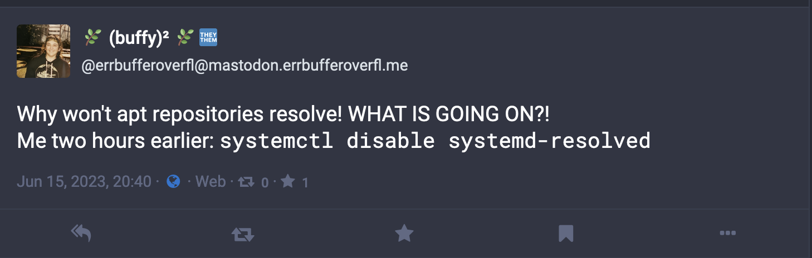

Environment Metadata
Ubuntu 22.10 x64 Distributed Press v1.2.1
About Distributed Press
Distributed Press is an open source publishing tool for the World Wide Web and Distributed Web. It automates publishing and hosting content to the web that it seeds to decentralised protocols like Hypercore and IPFS.
Prerequisite Knowledge
This doc assumes you’re familiar with apt-based Linux, the basics of Linux system administration and how to configure DNS.
Method
Create a new virtual private server (VPS) with your provider of choice, when using Digital Ocean I used a droplet with the following specifications:
- Image: Ubuntu 22.10 x64
- CPU: 4 vCPUs
- Memory: 8GB1
- Disk: 10GB Disk
- Droplet Cost: $AUD 48/mo
If you’re using Digital Ocean and unfamiliar with configuring your own logging and monitoring I’d advise against enabling the improved metrics monitoring because it will consume journalctl making it harder to debug.
System Specifications
The most important part of the system specifications is the memory, you want at a minimum 8GB to ensure that service works as expected.2
Install ansible on your desktop, cry a little because this is the only thing that needs it.
Make sure you install ansible and not ansible-core which doesn’t ship with ansible-galaxy.
Git clone the api.distributed.press repository onto your computer:
Using the terminal, navigate to the ansible directory:
Check the pinned version of Distribution Press
Before starting I recommend doing a quick sense check that the distributed_press_git_branch located in api.distributed.press/ansible/roles/distributed_press/defaults/main.yml matches the latest tagged version, otherwise you can run into esoteric issues that are difficult to debug.
Edit the inventory.yml file to specify your own domain to run the scripts on as well as any variables you want to set.
You must specify the distributed_press_domain to be your server, and your distributed_press_letsencrypt_email for registering the HTTPS certificate:
all:
vars:
distributed_press_domain: "distributed.errbufferoverfl.me"
distributed_press_letsencrypt_email: "rebecca@example.com"
distributed_press_served_sites: []
children:
distributed_press:
hosts:
distributed.errbufferoverfl.me:
ansible_user: rootInstall the dependencies on your local machine:
Add the VPS’s IP address and the distributed_press_domain to your /etc/hosts file so you don’t experience an UNREACHABLE error when you run the playbook. e.g.,
Execute the playbook:
Once the playbook has finished, login to your DNS provider and add in an new A record pointing your VPS to the new domain:
- Type: A
- Name:
subdomain - Content: VPS static IP address
- TTL: Auto
Add an NS record linking _dnslink to your site:
- Type: NS
- Name:
_dnslink - Content: the
distributed_press_domain - TTL: Auto
Login to the VPS and check the status of the service.
Ubuntu default DNS server
Also double check the logs using journalctl -fu distributed.press, if you see a bind EADDRINUSE 0.0.0.0:53 error you will need to disable an installed utility called dnsmasq.3
Running a Sense Check
When I installed my distributed.press instance a few things failed to initialize as expected so it’s worth manually checking these.
Ensure ufw is Active
To make sure the firewall is up, you can run:
Which, if enabled should return something like this:
Status: active
To Action From
-- ------ ----
53/udp ALLOW Anywhere
7976/udp ALLOW Anywhere
7976/tcp ALLOW Anywhere
Nginx Full ALLOW Anywhere
22/tcp ALLOW Anywhere
53/udp (v6) ALLOW Anywhere (v6)
7976/udp (v6) ALLOW Anywhere (v6)
7976/tcp (v6) ALLOW Anywhere (v6)
Nginx Full (v6) ALLOW Anywhere (v6)
22/tcp (v6) ALLOW Anywhere (v6)If you find that ufw is not enabled, you’ll want to enable it.
Ensure the Private Keys Are Generated
Normally ansible will handle generating a key for the JWT however, in my case this didn’t work and I had to manually generate a key.
I was able to identify this problem because I recieved the following error when trying to Get a root admin token:
Error: ENOENT: no such file or directory, open '/root/.local/share/distributed-press-nodejs/keys/private.key'To resolve this issue I replicated what ansible would do, and ran keygen again:
Get a root Admin Token
Authorisation on the service is handled using JSON Web Tokens (JWTs) that are issued to specific users.
By default, tokens expire after a week.
To generate the auth token necessary to make the very first admin user, you must use the ‘root’ admin token.
ssh into the VPS that is hosting your distributed.press instance and navigate to the the root directory of api.distributed.press
Run npm run make-admin which will print out the token to stdout.
Save the Token
Be sure to save the token somewhere secure as it will be important for making any administrative calls to the API.
Now that you have the root admin token, and the firewall is enabled, you can go ahead and start tinkering with your new distributed.press service.
For more information on how to you the API you can find the Swagger docs hosted on your instance at /v1/docs.
Additional Notes
Creating a New Publisher
To make sure we’re always operating in line with the principal of least privilege exchange the root token for a new one with the publisher subset of capabilities:
Add a Site to a Publisher
Errors
Distributed Press Host Unreachable
Experience the following error because you didn’t add the remote host to your /etc/host.
Scream into the void.
Unable to Resolve Remote Host after Installation
If you were running on a version of apt-based Linux and had to disable the default DNS server to get node working, when you attempt to run apt-update or try to run the Ansible script again it will fail.

To fix this, you’ll want to ssh onto the remote host, stop the distributed.press service and restart systemd-resolved.
Additional Resources
- hyphacoop/actions-distributed-press - Easily deploy a site to Distributed Press using GitHub Actions